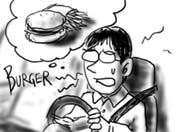

しばらく前，同僚に「kidsみたい」と言われました．studentとかならまだ分かるけど，kidsって！それ以来２週間，無精髭を伸ばし続けてみました．元来そんなに毛深い方でもないので，モミアゲ方面へは全く伸びて行かなくて貫禄に欠ける気がする上，物を食べる時に多少鬱陶しく思えるようになってきました．でも，これで多少は老けて見えるはずさ！
話は変わって，今日は駐在の先輩が行きつけだったそば屋(日本語可)に寄って帰りました．先輩は常連だったらしく，どこの会社に行ってて，どこに住んでるかなどの情報も筒抜け状態．その代償としてデザートがこっそり出てきたりしていました．
先輩が転勤になって一人になってから初めて行ってみたのですが，しっかり店員のおばちゃんに顔を覚えられていました．軽い挨拶なんかを交わします．しかしその後，おばちゃんの口から衝撃の発言が．
「この辺の学校に通ってらっしゃるの？」
先輩と一緒にご飯を食べに来てて，その先輩の会社も知っている状態で，尤もすんなり納得のいく理解を覆してしまうほど，僕は社会人に見えませんか？
…無精髭は役に立っていませんでした．帰って速攻で剃りました．邪魔だったしね(泣きながら)．
英語でとっさに困るのは，否定疑問文です．
「〜じゃないよな？」と聞かれると，つい日本語のつもりで肯定する時に「Yes」と答えてしまうのです．最近は注意して「No」と言うようにしてますが，やっぱり頭だけはコクリとうなずいてしまいがち．
今日も同僚に「だからその時は首を横に振るんだってば！」と注意されたのですが，それを横で聞いていたもう一人の同僚(中年女性)が，笑いながら「Yes, We have no bananas!」と言っていたのが，妙にカッコイイと思いました．
僕もとっさに粋な引用のできる中年になりたい．
こっちにいる日本側のマネージャが帰任するということで，新任のマネージャとの顔合わせを兼ねて飲み会でした．日本人相手だとランチじゃなくてしがらみ飲み会になるので困ります．
会場の居酒屋に集合すると，「ミズグチくん，あんまり日焼けしてないね」で軽くジャブ．その後自然にゴルフの話題へコンボ．3対1で孤立．「ゴルフ始めるなら，こっちにいる間がいいよ」とか「ゴルフ用品店はあそこにあるよ」とか話しかけられるのを，全て曖昧な笑みで誤魔化します．
「夏時間だと夜遅くまで明るいから，早めに仕事を切り上げて楽しむのが正解だよね」「僕，昨日も仕事終わってからハーフ回っちゃいましたよ」というのを端で聞きながら「僕は外に出るといつも暗いなぁ」とぼんやり考えていました．
「どこへ旅行に行きたい？」と聞かれても，取り立ててそんなに行きたい場所があるわけでもないので返答に窮していると「ラスベガスとか行くといいよ」と勧められます．そんな躁強大なところに行ったら逆に辛い気分になることは間違いないです．

こういう目に会う度，自分には何か重大な欠陥があるんじゃないかと思えてなりません．でも，「せっかく来てるんだから，エンジョイしなくちゃ！」っていう発想はどうにもビンボ臭い気がするんですが．
今日の午前中は，「Communication meeting(略してコミケ)」という，要は偉い人がやって来て経営方針をくっちゃべる会がありました．偉い人が都合の悪いところを隠して根拠レスな方針を語るのは洋の東西を問わないんだなぁと思いました．
その後，昼休みは同僚のベトナム人3人とベトナム料理を食べに外出．ベトナム麺(フォー)を美味しくいただきます．麺類は東洋の神秘．アジア食万歳！(パスタを完全に無視しています)．食事中，僕を除く3人はベラベラとベトナム語で話すので，話題について行けません．「大丈夫，君の悪口言ってる訳じゃないから」とか断わりを入れられたり．信じる意外の選択肢はありません．
帰りの車の中で「なんで食べる時に音を立てるんだ？」と聞かれて激しく困惑．あわわわ，ついうどんのつもりで思いきりすすってました．「こ，これは日本流の食べ方なんだよ！」と必死で弁解するも「やっぱり満足感が違うのか？」とか言いながら啜る音を真似され，赤面しそうでしたよ．ギニャー．
その日は，車内でDevoの「Satisfaction」を流しながら帰宅しました．I can't get no!
マリア様がモテる！(挨拶)
生きてますよ！ネットに繋がったら日記をまとめて書いてアップしようと思っているうちに，どんどんと書くことがたまってしまって全然進みませんでした．
なんとか意地で書き続けてきたものをまとめたので，どーんと一気に大放出です．長かったです．7月中旬から8月中旬まで，書けるところは全部書いたので，一応抜けはありません．
というわけで復活です．またよろしくお願いします．
同僚２人とIN 'N OUTバーガーまで昼飯を買いに行くことになったのですが，あいにく同僚の車は２人乗りということで，僕の車が出動することになりました．
僕の車に乗り込んだ同僚２人は「お，まだ新車の匂いがする」と言って喜んでいます．そのまま道案内してもらってIN 'N OUTバーガーまで直行．ドライブスルーに突入します．
同僚が，隠しメニューに「プロテインスタイル」というものがあると教えてくれたので，それを注文．ドライブスルーを回り込んでハンバーガーを受け取り，料金を支払います．帰りはフリーウェイに乗って颯爽とオフィスまで帰還．僕だってやるときはやるぜ！
「プロテインスタイル」とは，バンズの替わりにレタスでパティをくるんだ物でした．それはもはやハンバーガーと呼べるのでしょうか．炭水化物を取らないようにするダイエットメニューなんだそうです．野菜が普通より多くとれていいのですが，僕にはダイエットは不要と言いたい．
そして新車の匂いがしたはずの僕の車の中は，しっかりハンバーガー臭がするようになりました．

ハンバーガー強すぎ．